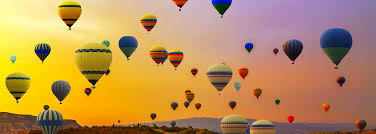
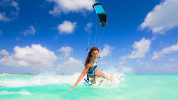
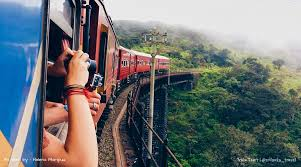
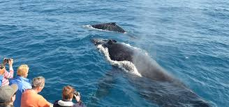
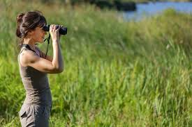
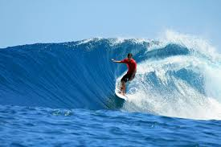

SRI LANKA TRAVEL AND TOURISM | SRI LANKA TRAVEL AGENCY | BEST TOUR OPERATOR 2019 ---- INFO@SRILANKATRAVELANDTORUISM.COM
BEST THING TO DO IN SRI LANKA
|  Hot air ballooning Hot air ballooning is a relatively new activity, Imagine yourself floating gracefully over the spectacular lands of Sri Lanka. More Details |
 Kitesurfing Sri Lanka is a perfect place to get acquainted with kitesurfing and learn all the ropes. Start kiting in paradise and you won’t be able to stop! More Details |
 Train tours Sri Lanka is a beautiful country that’s ideal for train trips. You get to enjoy the most spectacular scenery while still having the opportunity.. More Details |
 Whale watching Whale watching is one of the most spectacular experiences to have in Sri Lanka. Just imagine these beautiful beings leap gracefully from the sea... More Details |
|  Bird watching Sri Lanka is literally a bird-watcher's treasure box. It is a bird watching paradise with a large number of birds that are endemic to Sri Lanka. More Details |
 Surfing The most famous place for surfing is the Arugam bay on the East Coast which also happened to host the 2004 National Championships. More Details |
 Hiking Hiking is usually done up in the Hill country where mountains and water falls are found in abundance. More Details |
Wedding Sri Lanka is now the ultimate romantic destination in the world, the number of weddings held per year in Sri Lanka is increasing day by day. More Details |
+94 999 888 111 info@sltravelandtourism.com © 2019 Sri Lanka Travel & Tourism